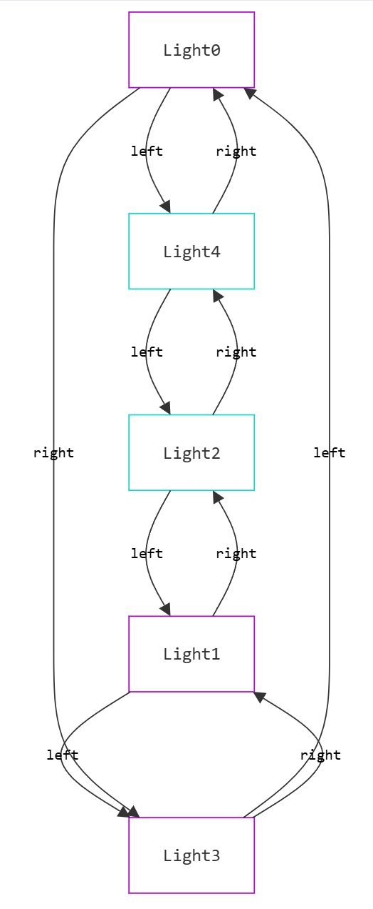
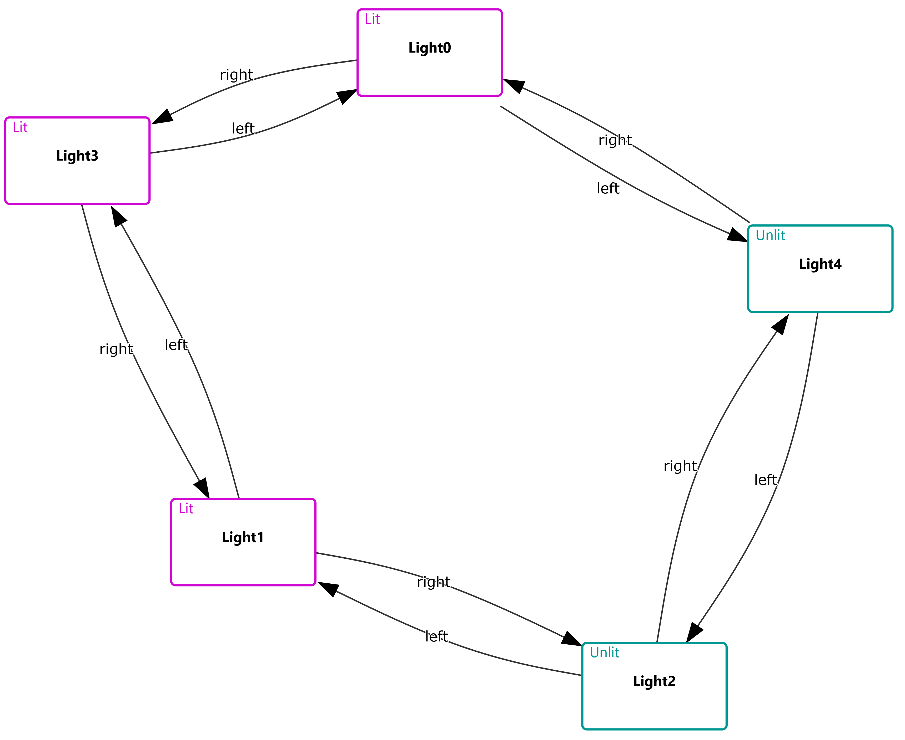
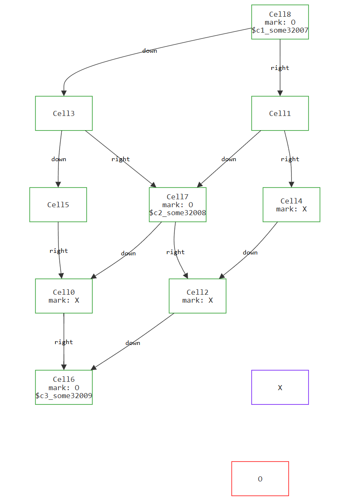
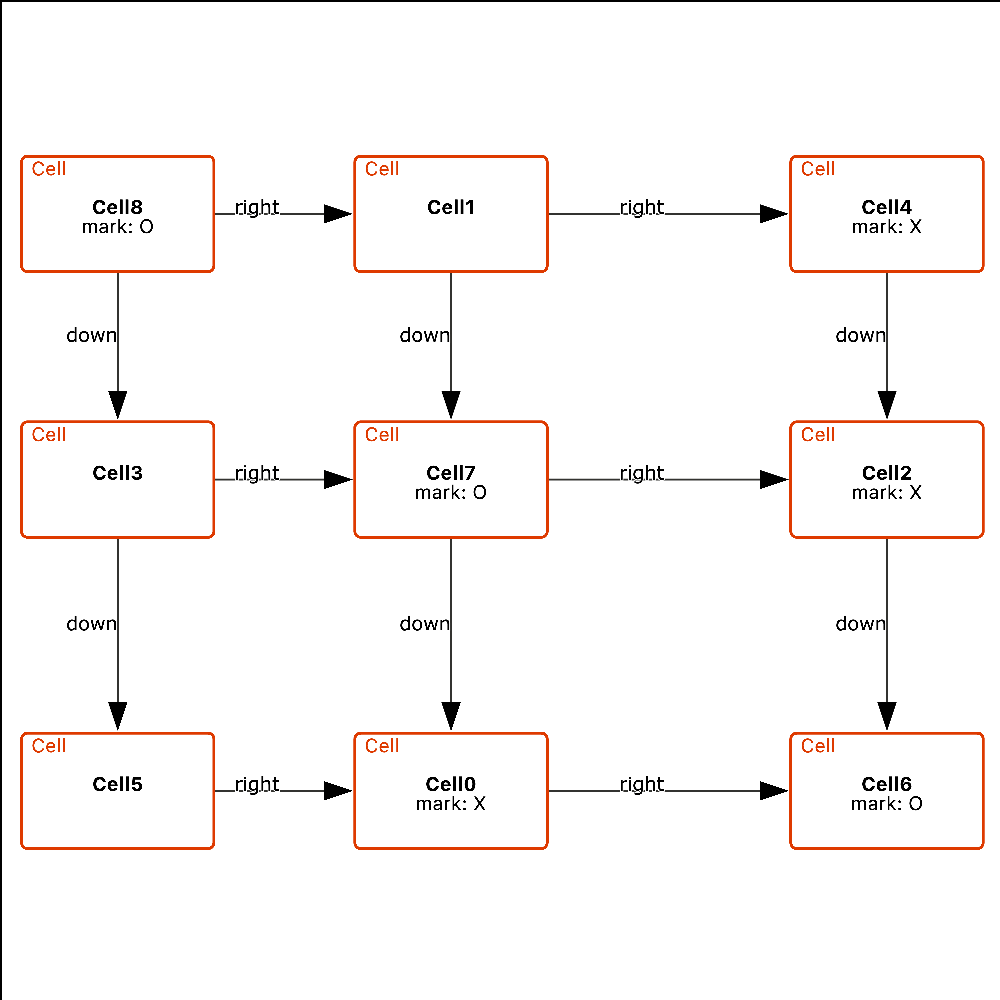
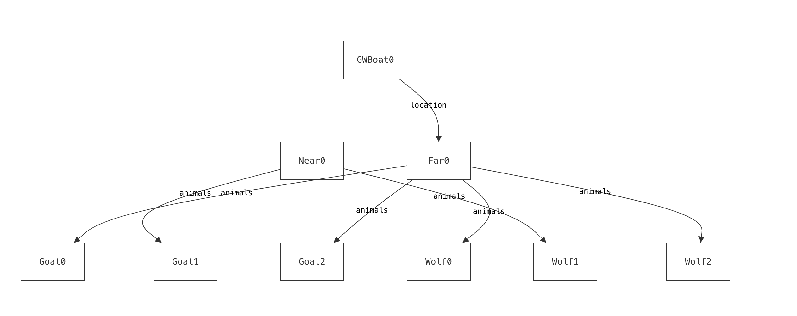
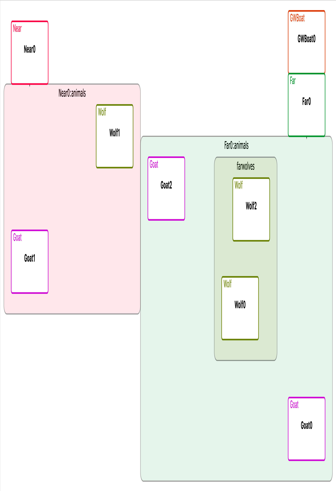

Constraints
Constraints define spatial relationships between elements in the diagram. Each constraint consists of a type and associated parameters.
Cyclic Constraints
Cyclic constraints arranges related elements in a circular layout.
For example, the constraint below converts the image on the left to that on the right.

constraints:
- cyclic:
selector: "left"
direction: clockwise

Parameters
selector: A Forge expression that determines which elements upon which the constraint acts. This expression must return a set of elements of arity >= 2, and the first and last of each tuple will be used.direction: [Optional] Direction in which elements will be laid out. One ofclockwiseorcounterclockwise. Defaults toclockwise
Orientation Constraints
Specify the relative positioning of elements.
Orientation for Fields
The following orientation constraints lay out elements related by a field named down directly below one another,
and elements related by the field named right to be directly right of one another. This transforms the Sterling output on the left to that on the right.

constraints:
- orientation:
selector: "down"
directions:
- directlyBelow
- orientation:
selector: "right"
directions:
- directlyRight

Parameters
selector: A Forge expression that determines which elements upon which the constraint acts. This expression must return a set of elements of arity >= 2, and the first and last of each tuple will be used.directions: Directions in which elements will be laid out. List of directions, which can beleft,right,above,below,directlyAbove,directlyBelow,directlyLeft,directlyRight.
Grouping Constraints
Group elements together based on either a selector OR a field. Groups cannot intersect unless one is subsumed by another.
Grouping by field removes multiple edges between the group source(s) and target(s), and replaces them with the lowest number of arrows between group and element.
Grouping by Selector Parameters
selector: A Forge expression that determines which elements upon which the constraint acts. This expression must return a set of singletons.name: Name of the group to be displayed.
Grouping by Field Parameters
field: Name of the field in the source specification upon which the constraint acts.groupOn: The 0 indexed element of the field that is used to group elements.addToGroup: The 0 indexed element of the field which should be added to the group.
The constraints below:
- Group elements on the domain of the
animalsfield by grouping on the 0th element of the animals field and adding the 1st element of the field to the group. - Grouping all the Wolves on the far side by selector, and naming the group
farwolves.

constraints:
- group:
field: animals
groupOn: '0'
addToGroup: '1'
- group:
selector: '{ w : Wolf | w in Far.animals }'
name: farwolves

When Constraints Cannot Be Satisfied
All CnD constraints are hard constraints, and thus must be satisfied for a diagram to be produced. Constraints might not be satisfied for one of two reasons:
A single CnD constraint definition could be inherently unsatisfiable. For example, a constraint on the next field that requires the same field to be laid out both leftwards and rightwards:
1 2 3 | |
This represents a bug in the CnD spec, and can be identified statically. In this case, CnD produces an error message in terms of the constraints that could not be satisfied.
Some constraints may be individually satisfiable, but become contradictory when laying out a specific instance. This is akin to a dynamic error, as it depends on the structure of the instance being visualized.
In both these cases, CnD does not produce a diagram. Instead, it provides an error message explaining that the constraints could not be met.